ПРОВЕРОЧНАЯ РАБОТА №1
ВАРИАНТ 1
1. Князь Андрей Боголюбский перенёс столицу Северо-Восточной Руси в город:
1) Владимир
2) Ростов
3) Суздаль
4) Москву
2. Установите соответствие между событиями и годами.
СОБЫТИЯ
1) начало правления Андрея Боголюбского в Ростово-Суздальском княжестве
2) первое упоминание Москвы в летописи
3) образование Галицко-Волынского княжества
ГОДЫ
A) 1132 г.
Б) 1147 г.
B) 1157 г.
Г) 1199 г.
Запишите буквы, соответствующие выбранным ответам.
3. Прочитайте отрывок из сочинения историка и укажите дважды пропущенное в тексте название города.
Если половецкую опасность удавалось сдерживать, привлекая к обороне границ других русских князей, то справиться с северо-восточным соседом сил уже не было. Сначала Юрий Долгорукий отобрал у ____ Переяславское княжество, потом сам утвердился в ____. Впервые Северо-Восток взял верх над Югом русских земель. Это указывало на возросшую мощь Ростово-Суздальской Руси и на то, что центр русской государственности постепенно перемещается на северо-восток.
1) Киев
2) Новгород
3) Чернигов
4) Владимир-Волынский
4. Установите соответствие между событиями (процессами) и участниками этих событий (процессов).
СОБЫТИЯ (ПРОЦЕССЫ)
1) поход в Польшу в 1205 г.
2) борьба за власть во Владимиро-Суздальском княжестве после смерти Андрея Боголюбского
3) оставление Новгорода в результате восстания новгородцев в 1136 г.
УЧАСТНИКИ
A) Всеволод Большое Гнездо
Б) Юрий Долгорукий
B) Всеволод Мстиславич
Г) Роман Мстиславич
5. Что из перечисленного стало одним из последствий распада Руси на самостоятельные земли?
1) утрата религиозного единства русских земель
2) международная изоляция русских княжеств и земель
3) упадок культуры в русских княжествах и землях
4) ослабление обороноспособности русских земель
6. Какие из перечисленных городов находились на территории Владимиро-Суздальского княжества во второй половине XII в.?
1) Ладога
4) Изборск
2) Ростов
5) Ярославль
3) Чернигов
Выберите несколько правильных ответов.
7. Рассмотрите изображение и укажите город, где находится данный памятник архитектуры.
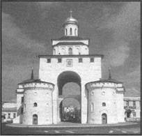
1) Владимир
2) Киев
3) Новгород
4) Москва
8. Прочитайте текст, в котором каждое предложение пронумеровано. Данный текст содержит две ошибки. Фрагменты текста, в которых, возможно, сделаны ошибки, подчёркнуты и выделены жирным шрифтом.
(1) Главой новгородской церкви был владыка. (2) Он назначался посадником и только потом утверждался митрополитом. (3) Глава новгородской церкви участвовал в реальном управлении делами всей новгородской земли. (4) Одной из его задач был контроль над эталонами мер и весов. (5) Вместе с посадником и тысяцким он участвовал в руководстве внешней политикой. (6) Глава новгородской церкви переназначался каждые пять лет.
Укажите номера предложений, в которых есть фрагменты, содержащие ошибки.
Рассмотрите карту «Русь в XII—XIII вв.» и выполните задания 9-11.
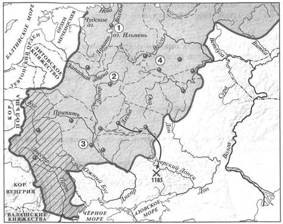
9. Укажите территорию, выделенную на карте штриховкой.
1) Новгородская земля
2) Владимиро-Суздальское княжество
3) Черниговское княжество
4) Галицко-Волынское княжество
10. Укажите цифру, которой обозначен город, взятый в 1169 г. войском Андрея Боголюбского.
11. Напишите имя князя, осуществившего поход, обозначенный на схеме стрелками.
12. Запишите термин, о котором идёт речь.
Второе по значению лицо в системе управления Новгородом. Осуществлял контроль налоговой системы, ведал торговым судом, возглавлял в походах городское ополчение.
Ответ:
13. Прочитайте отрывок из сочинения историка и укажите город, об архитектуре которого идёт речь.
В отличие от Владимира, местные церкви внешне суровы и сдержанно величавы, как сама северная природа. Они лишены киевской изысканности. Местный деловой люд ценил демократическую простоту, строгость, внушительную силу.
Здесь возникает новый тип храма — небольшой по величине, призматической формы, близкой к кубу, с одним куполом. Строили его из местного известняка, который плохо поддавался обработке, поэтому фасады очень просты, без декора.
Ответ:
14. Укажите название, пропущенное в схеме.
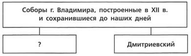
Ответ:
ЗАПОЛНИТЕ ТАБЛИЦУ ОТВЕТОВ
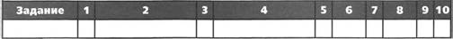
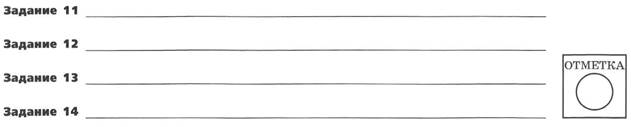
ВАРИАНТ 2
1. Что является характерной чертой Галицко-Волынского княжества?
1) отсутствие оживлённых торговых путей
2) развитое земледелие
3) республиканская форма правления
4) отсутствие борьбы между князьями и боярством
2. Установите соответствие между событиями и годами.
СОБЫТИЯ
1) поход новгород-северского князя Игоря Святославича против половцев
2) захват Киева Романом Мстиславичем
3) смерть Мстислава Великого
ГОДЫ
A) 1132 г.
Б) 1157 г.
B) 1185 г.
Г) 1202 г.
Запишите буквы, соответствующие выбранным ответам.
3. Прочитайте отрывок из сочинения историка и укажите пропущенное название города.
Борьба с Суздальским князем была неравная; в руках его находилось могущественное средство: он прекратил подвоз хлеба из поволжских областей, и в ____ настала страшная дороговизна. Не далее как в следующем году граждане смирились, отослали от себя Романа Мстиславича, заключили мир с Андреем и приняли от него князя.
1) Киев
2) Новгород
3) Чернигов
4) Владимир-Волынский
4. Установите соответствие между событиями (процессами) и участниками этих событий (процессов).
СОБЫТИЯ (ПРОЦЕССЫ)
1) борьба за власть во Владимиро-Суздальском княжестве во втором десятилетии XIII в.
2) образование Галицко-Волынского княжества
3) закладка первой деревянной крепости в Москве
УЧАСТНИКИ
A) Юрий Всеволодович
Б) Андрей Боголюбский
B) Роман Мстиславич
Г) Юрий Долгорукий
Запишите буквы, соответствующие выбранным ответам.
5. Что из перечисленного было одной из причин распада Руси на самостоятельные земли?
1) активизация торговли по пути «из варяг в греки»
2) несовершенный порядок престолонаследия
3) создание свода законов Русская Правда
4) усиление внешней опасности со стороны половцев
6. Какие из перечисленных городов находились на территории Новгородской земли во второй половине XII в.?
1) Ладога
2) Ростов
3) Муром
4) Псков
5) Ярославль
Выберите несколько правильных ответов.
7. Рассмотрите изображение и укажите город, где находится данный памятник архитектуры.
1) Чернигов
2) Владимир
3) Новгород
4) Москва
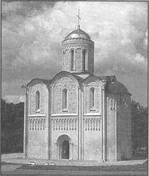
8. Прочитайте текст, в котором каждое предложение пронумеровано. Данный текст содержит две ошибки. Фрагменты текста, в которых, возможно, сделаны ошибки, подчёркнуты и выделены жирным шрифтом.
(1) Андрей Боголюбский был сыном Юрия Долгорукого. (2) Время Андрея Боголюбского — время весьма активной политики владимиро-суздальского князя. (3) Он ведёт успешную войну с Хазарским каганатом. (4) В 1169 г. войска Андрея под предводительством его сына Мстислава взяли Киев. (5) Город был сожжён, горожане частью уведены в плен, частью истреблены. (6) Подчинив себе Киев и получив официально титул великого князя киевского, Андрей, как и его отец в 1055 г., не переехал туда.
Укажите номера предложений, в которых есть фрагменты, содержащие ошибки.
Рассмотрите карту «Русь в XII—XIII вв.» и выполните задания 9-11.
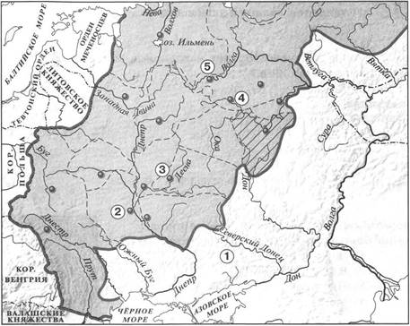
9. Укажите территорию, выделенную штриховкой на карте.
1) Новгородская земля
2) Владимиро-Суздальское княжество
3) Рязанское княжество
4) Полоцкое княжество
10. Какой цифрой обозначен город, первое упоминание о котором относится к 1147 г.?
11. Укажите название кочевого народа, обитавшего на территории, обозначенной цифрой «1» в начале XII в.
12. Запишите термин, о котором идёт речь.
Владение младших членов княжеского рода.
Ответ:
13. Прочитайте отрывок из сочинения историка и впишите имя и прозвище, пропущенные в тексте.
____ — предполагаемый автор «Моления» и «Слова», в древнерусскую эпоху считавшихся кладезем житейской мудрости. Годы жизни и обстоятельства биографии его неизвестны. Не исключено, что ему приписан обобщённый плод творчества нескольких авторов. По своему жанру «Моление» и «Слово» представляют афористически-поэтические сочинения. «Слово» — это гимн разуму и самоценности человеческой личности, свободной по отношению к авторитетам и в то же время зависимой от превратностей судьбы.
14. Укажите слово, пропущенное в схеме.
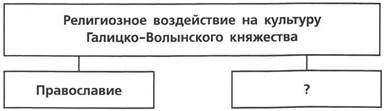
Ответ:
ЗАПОЛНИТЕ ТАБЛИЦУ ОТВЕТОВ
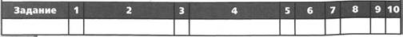
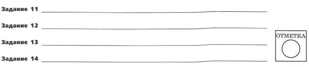
ПРОВЕРОЧНАЯ РАБОТА №2
ВАРИАНТ 1
1. Назовите произведение искусства, которое, согласно легенде, непосредственно связано с основанием резиденции князя Андрея Юрьевича — Боголюбово. Укажите любые два литературных произведения, которые были созданы на Руси в XII — первой половине XIII в.
Произведение искусства
Литературные произведения
1) ________
2) ________
2. Считается, что в Новгородской земле в XII в. утвердилась республиканская форма правления. Приведите два аргумента, подтверждающие это положение.
3. Прочитайте отрывок из сочинения историка и выполните задания.
...Однако ни отсутствие прочных экономических связей, ни племенная рознь не воспрепятствовали в IX в. объединению восточнославянских племенных союзов в единое государство и на протяжении почти трёх веков не приводили к его распаду. Причины перехода к раздробленности следует искать прежде всего в появлении и распространении землевладения не только княжеского, но и частного, возникновении боярских сёл. Основой экономической мощи господствующего класса становится теперь не дань, а эксплуатация зависимых людей внутри боярских вотчин. Этот процесс постепенного оседания дружины на землю заставлял и князя быть менее подвижным, стремиться укрепить своё собственное княжество, а не переходить на новый княжеский стол.
Укажите имя киевского князя, сына Владимира Мономаха, после смерти которого начался период, о котором идёт речь в отрывке.
Какие причины и предпосылки наступления этого периода называет автор? Укажите три причины (предпосылки).
Укажите одну любую не названную в отрывке причину (предпосылку) начала периода, о котором идёт речь. Укажите два положительных последствия начала этого периода для русских земель.
4. Сравните развитие культуры Руси до и после распада Древнерусского государства по линиям сравнения, указанным в таблице. На основании сравнения сделайте вывод.
|
Линии сравнения |
До раздробленности |
После раздробленности |
|
Глава Русской православной церкви и место, где находилась его резиденция |
||
|
Наличие единого языка для всей Руси |
||
|
Храмы, построенные в данный период (перечислить известные вам), с указанием места |
||
|
Распространение летописания (вспомните о городах, где создавались летописи) |
Вывод:
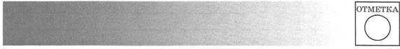
ВАРИАНТ 2
1. Укажите не менее трёх памятников архитектуры, построенных во Владимиро-Суздальской земле в годы княжения Андрея Боголюбского.
1) ________
2) ________
3) ________
2. Приведите два аргумента в подтверждение точки зрения о том, что, несмотря на наступивший период раздробленности, в середине XII в. Киевское княжество сохраняло особое положение среди других русских княжеств.
3. Прочитайте отрывок из сочинения историка и выполните задания.
Город был могущественнее князя. Последний княжил только в силу договора, ряда... Главными правительственными лицами... были: 1) посадник, которого немецкие писатели того времени называли бургомистром и которого сменяли почти так же часто, как и князя... Первое правительственное лицо города было обязано защищать льготы города; оно разделяло с князем судебную власть и право раздавать волости. Оно управляло городом, предводительствовало его войском, вело от его имени переговоры, утверждало грамоты своей печатью; 2) тысяцкий...
О каком городе идёт речь в данном отрывке?
Что можно сказать о положении князя на основании данного отрывка? Приведите две характеристики. Что можно сказать о положении посадника? Приведите одну характеристику.
Какой орган обладал верховной властью во второй половине XII в. в городе, о котором идёт речь в отрывке? Укажите не менее двух вопросов, которые решал этот орган.
4. Сравните развитие Древнерусского государства в начале X в. и в первой половине XII в. с точки зрения существования предпосылок его распада по линиям сравнения, указанным в таблице. На основании сравнения сделайте вывод.
|
Линии сравнения |
Начало X в. |
Первая половина XII в. |
|
Господство натурального хозяйства |
||
|
Существование племенной обособленности |
||
|
Значение торгового пути «из варяг в греки» |
||
|
Существование и распространение боярского землевладения |
Вывод:
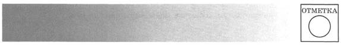